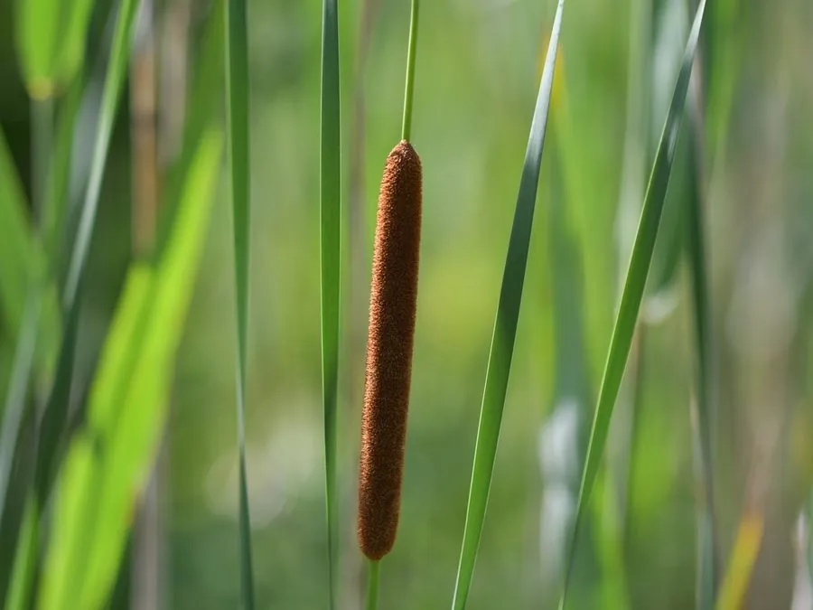

水生植物 · 植物界
水烛 Typha angustifolia

香蒲科香蒲属多年生挺水草本，叶片细长、花序圆柱形如蜡烛，生于池塘沼泽，花粉可入药，是常见的水景植物。
- 分类
- 门被子植物门纲单子叶植物纲目禾本目科香蒲科属香蒲属
- 栖息环境
- 池塘、湖泊、沼泽和河岸的浅水区
- 地理分布
- 北半球温带地区，中国南北各地常见
- 保护级别
- 暂无评估
物种志
水烛为香蒲科香蒲属的多年生挺水草本，株高 1.5–3 米，根状茎粗壮。叶片线形，长 1–2 米，宽 0.5–1 厘米，基部鞘状抱茎。花序为穗状花序，顶生，雄花序在上、雌花序在下，雌花序圆柱形、深褐色，长 10–20 厘米，形似蜡烛，花期 6–8 月；果实为小坚果。
水烛广泛分布于北半球温带的池塘、湖泊、沼泽和河岸，中国南北各地常见，喜阳光充足、温暖湿润和浅水环境，适宜水深 30–80 厘米。它花序圆柱形、形似蜡烛，是水景绿化的常见植物；花粉即蒲黄，可入药，有止血化瘀之效；叶片可编织席、篮。栽培以根状茎分株繁殖为主，生长期间保持浅水，冬季剪除枯叶。
形态与习性
- 株高1.5–3 米
- 叶片线形，长 1–2 米
- 花期6–8 月，雌花序深褐色、圆柱形
- 水深适宜水深 30–80 厘米
- 光照喜充足阳光
- 土壤富含腐殖质的塘泥
- 繁殖根状茎分株
- 主要用途水景观赏、蒲黄入药、叶片编织
趣味知识
- 水烛的雌花序圆柱形、深褐色，像一根插在水中的蜡烛。
- 它的花粉即蒲黄，可入药，有止血化瘀之效。
- 水烛的叶片细长柔韧，过去常用来编织席子和篮子。